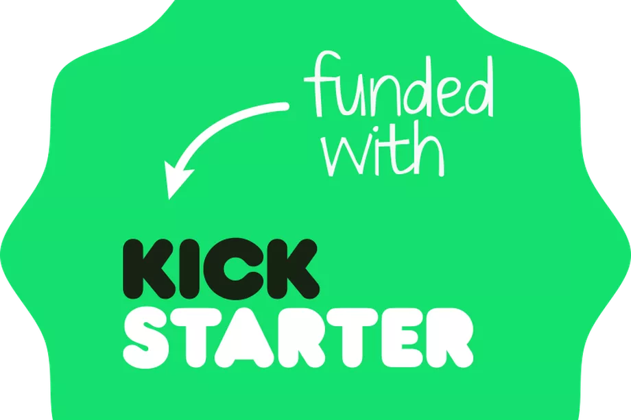
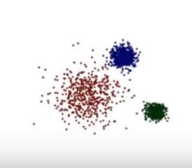
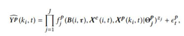
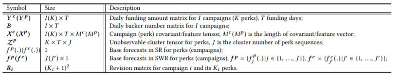
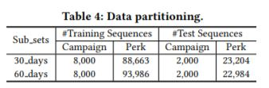
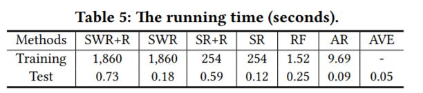

Tracking the Dynamics in Crowdfunding
Pranav Prem
011549707
These companies allow you to create campaigns with perks to attract funding.
A hierarchical model is used
With input as
Funding sequence of a campaign and
Features of the campaign and perks
to estimate the
Amount of funding in the near future
Two-level time series:
Campaign Level Forecasts
Perk Level base forecasts
Are done using 2 regression models:
1. Single Regression for Perks and Campaigns
2. Switching Regression where Perks and Campaigns are put into
different clusters with different regression models.
Results are combined using a Revision Matrix
Switching Regression Model
Notations 
Experiment

 
Conclusion
1. The adjacent daily funding amount is highly correlated
2. The series of both campaigns and perks at different funding time have different dynamic patterns
3. While this model needs significantly more training time than other individual models, it is seen to perform better by combining results.
4. There is a large scope and utility in Crowdfunding analysis.